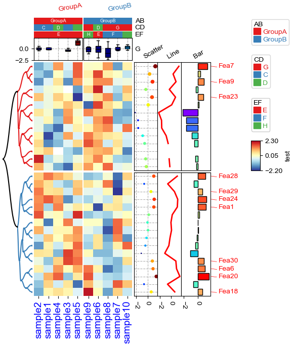

1. Import packages¶
[1]:
import os,sys
%matplotlib inline
import matplotlib.pylab as plt
import pickle
plt.rcParams['figure.dpi'] = 100
plt.rcParams['savefig.dpi']=300
sys.path.append(os.path.expanduser("~/Projects/Github/PyComplexHeatmap/"))
import PyComplexHeatmap
from PyComplexHeatmap import *
2. Generate dataset¶
[26]:
#Generate example dataset (random)
df = pd.DataFrame(['GroupA'] * 5 + ['GroupB'] * 5, columns=['AB'])
df['CD'] = ['C'] * 3 + ['D'] * 3 + ['G'] * 4
df['EF'] = ['E'] * 6 + ['F'] * 2 + ['H'] * 2
df['F'] = np.random.normal(0, 1, 10)
df.index = ['sample' + str(i) for i in range(1, df.shape[0] + 1)]
df_box = pd.DataFrame(np.random.randn(10, 4), columns=['Gene' + str(i) for i in range(1, 5)])
df_box.index = ['sample' + str(i) for i in range(1, df_box.shape[0] + 1)]
df_bar = pd.DataFrame(np.random.uniform(0, 10, (10, 2)), columns=['TMB1', 'TMB2'])
df_bar.index = ['sample' + str(i) for i in range(1, df_box.shape[0] + 1)]
df_scatter = pd.DataFrame(np.random.uniform(0, 10, 10), columns=['Scatter'])
df_scatter.index = ['sample' + str(i) for i in range(1, df_box.shape[0] + 1)]
df_heatmap = pd.DataFrame(np.random.randn(30, 10), columns=['sample' + str(i) for i in range(1, 11)])
df_heatmap.index = ["Fea" + str(i) for i in range(1, df_heatmap.shape[0] + 1)]
df_heatmap.iloc[1, 2] = np.nan
3. Test the row / col orders & add selected rows labels¶
[85]:
#Annotate the rows with average > 0.3
df_rows = df_heatmap.apply(lambda x:x.name if x.sample4 > 0.5 else None,axis=1)
df_rows=df_rows.to_frame(name='Selected')
df_rows['XY']=df_rows.index.to_series().apply(lambda x:'A' if int(x.replace('Fea',''))>=15 else 'B')
row_ha = HeatmapAnnotation(
Scatter=anno_scatterplot(df_heatmap.sample4.apply(lambda x:round(x,2)),
height=12,cmap='jet',legend=False),
Bar=anno_barplot(df_heatmap.sample4.apply(lambda x:round(x,2)),
height=16,cmap='rainbow',legend=False),
selected=anno_label(df_rows,colors='red',relpos=(-0.05,0.4)),
label_kws={'rotation':30,'horizontalalignment':'left','verticalalignment':'bottom'},
axis=0,verbose=0)
col_ha = HeatmapAnnotation(label=anno_label(df.AB, merge=True,rotation=10),
AB=anno_simple(df.AB,add_text=True),axis=1,
CD=anno_simple(df.CD,add_text=True),
EF=anno_simple(df.EF,add_text=True,
legend_kws={'frameon':True}),
G=anno_boxplot(df_box, cmap='jet',legend=False),
verbose=0)
plt.figure(figsize=(5.5, 6.5))
cm = ClusterMapPlotter(data=df_heatmap, top_annotation=col_ha,right_annotation=row_ha,
col_cluster=True,row_cluster=True,
col_split=df.AB,row_split=2,
col_split_gap=0.5,row_split_gap=0.8,
label='values',row_dendrogram=True,
show_rownames=False,show_colnames=True,
tree_kws={'row_cmap': 'Set1'},verbose=0,legend_gap=5,
cmap='RdYlBu_r',xticklabels_kws={'labelrotation':-45,'labelcolor':'blue'})
plt.savefig("example0.pdf", bbox_inches='tight')
plt.show()

[73]:
#Annotate the rows with average > 0.3
df_rows = df_heatmap.apply(lambda x:x.name if x.sample4 > 0.5 else None,axis=1)
df_rows=df_rows.to_frame(name='Selected')
df_rows['XY']=df_rows.index.to_series().apply(lambda x:'A' if int(x.replace('Fea',''))>=15 else 'B')
row_ha = HeatmapAnnotation(S4=anno_simple(df_heatmap.sample4.apply(lambda x:round(x,2)),
add_text=True,height=10,
text_kws={'rotation':0,'fontsize':10,'color':'black'}),
# Scatter=anno_scatterplot(df_heatmap.sample4.apply(lambda x:round(x,2)),
# height=10),
Test=anno_barplot(df_heatmap.sample4.apply(lambda x:round(x,2)),
height=18,cmap='rainbow'),
selected=anno_label(df_rows,colors='red'),
axis=0,verbose=0,label_kws={'rotation':0,'horizontalalignment':'left','verticalalignment':'bottom'})
col_ha = HeatmapAnnotation(label=anno_label(df.AB, merge=True,rotation=15),
AB=anno_simple(df.AB,add_text=True),axis=1,
CD=anno_simple(df.CD,add_text=True),
EF=anno_simple(df.EF,add_text=True,
legend_kws={'frameon':False}),
Exp=anno_boxplot(df_box, cmap='turbo'),
verbose=0) #verbose=0 will turn off the log.
print(df)
print(df_box.mean(axis=1))
print(df_heatmap)
plt.figure(figsize=(6, 8))
cm = ClusterMapPlotter(data=df_heatmap, top_annotation=col_ha,right_annotation=row_ha,
col_split=df.AB,
row_split=df_rows.XY, col_split_gap=0.5,row_split_gap=1,
col_cluster=True,row_cluster=True,
label='values',row_dendrogram=False,show_rownames=True,show_colnames=True,
tree_kws={'row_cmap': 'Set1'},verbose=0,legend_gap=7,
annot=True,linewidths=0.05,linecolor='gold',cmap='turbo',
xticklabels_kws={'labelrotation':-45,'labelcolor':'blue'})
plt.show()
print(cm.row_order)
print(cm.col_order)
AB CD EF F
sample1 GroupA C E -0.881382
sample2 GroupA C E -0.480297
sample3 GroupA C E 0.102108
sample4 GroupA D E -1.725688
sample5 GroupA D E -0.258397
sample6 GroupB D E -0.170779
sample7 GroupB G F -0.324812
sample8 GroupB G F -0.557430
sample9 GroupB G H -0.555079
sample10 GroupB G H 0.506060
sample1 -0.563997
sample2 0.298367
sample3 -0.805847
sample4 -0.418767
sample5 0.671735
sample6 -0.443561
sample7 -0.146160
sample8 0.156239
sample9 0.067260
sample10 -0.785898
dtype: float64
sample1 sample2 sample3 sample4 sample5 sample6 sample7 \
Fea1 1.670592 0.912579 -0.091027 -0.165968 0.347767 -0.352608 -1.842244
Fea2 -1.322940 1.312047 NaN 0.736256 -1.401468 -0.025688 0.919198
Fea3 -1.029297 2.777009 0.629885 -0.830422 0.128877 -0.956472 0.856012
Fea4 0.967396 0.083289 -0.728927 -0.168148 -0.881884 -1.198585 -1.001341
Fea5 0.087821 -0.379729 0.009907 1.331596 0.342691 -0.688901 -0.646120
... ... ... ... ... ... ... ...
Fea26 -0.611274 -0.896807 0.961595 0.094849 0.457831 -0.759636 0.789944
Fea27 -0.886181 0.342816 -0.493589 1.323256 -0.281842 0.024884 -0.455787
Fea28 0.869188 -0.749820 -0.639477 -0.031051 -0.731294 0.597629 1.033627
Fea29 -0.444061 0.477373 -0.575369 0.641286 0.111358 -0.532368 -1.737836
Fea30 1.412366 -0.488808 0.158610 2.174791 0.134769 -0.401461 0.535793
sample8 sample9 sample10
Fea1 -0.218963 0.924524 1.237173
Fea2 1.500008 1.050765 -0.017206
Fea3 1.182528 1.298643 0.672496
Fea4 0.659614 -0.795751 -0.292764
Fea5 -0.306107 -0.744010 0.973875
... ... ... ...
Fea26 0.799144 -1.168120 0.370193
Fea27 -1.969124 -0.807946 -0.297944
Fea28 -0.204987 1.602072 -0.793828
Fea29 0.244399 0.412391 1.371589
Fea30 0.328029 0.108545 0.423723
[30 rows x 10 columns]

[['Fea20', 'Fea29', 'Fea19', 'Fea30', 'Fea22', 'Fea27', 'Fea16', 'Fea17', 'Fea24', 'Fea25', 'Fea28', 'Fea26', 'Fea15', 'Fea23', 'Fea18', 'Fea21'], ['Fea7', 'Fea12', 'Fea11', 'Fea14', 'Fea8', 'Fea13', 'Fea2', 'Fea3', 'Fea10', 'Fea6', 'Fea9', 'Fea5', 'Fea1', 'Fea4']]
[['sample1', 'sample5', 'sample4', 'sample2', 'sample3'], ['sample10', 'sample6', 'sample9', 'sample7', 'sample8']]
4. Annotations¶
[4]:
df = pd.DataFrame(['AAAA1'] * 5 + ['BBBBB2'] * 5, columns=['AB'])
df['CD'] = ['C'] * 3 + ['D'] * 3 + ['G'] * 4
df['F'] = np.random.normal(0, 1, 10)
df.index = ['sample' + str(i) for i in range(1, df.shape[0] + 1)]
df_box = pd.DataFrame(np.random.randn(10, 4), columns=['Gene' + str(i) for i in range(1, 5)])
df_box.index = ['sample' + str(i) for i in range(1, df_box.shape[0] + 1)]
df_bar = pd.DataFrame(np.random.uniform(0, 10, (10, 2)), columns=['TMB1', 'TMB2'])
df_bar.index = ['sample' + str(i) for i in range(1, df_box.shape[0] + 1)]
df_scatter = pd.DataFrame(np.random.uniform(0, 10, 10), columns=['Scatter'])
df_scatter.index = ['sample' + str(i) for i in range(1, df_box.shape[0] + 1)]
df_bar1 = pd.DataFrame(np.random.uniform(0, 10, (10, 2)), columns=['T1-A', 'T1-B'])
df_bar1.index = ['sample' + str(i) for i in range(1, df_box.shape[0] + 1)]
df_bar2 = pd.DataFrame(np.random.uniform(0, 10, (10, 2)), columns=['T2-A', 'T2-B'])
df_bar2.index = ['sample' + str(i) for i in range(1, df_box.shape[0] + 1)]
df_bar3 = pd.DataFrame(np.random.uniform(0, 10, (10, 2)), columns=['T3-A', 'T3-B'])
df_bar3.index = ['sample' + str(i) for i in range(1, df_box.shape[0] + 1)]
df_bar3.iloc[5,0]=np.nan
df_bar4 = pd.DataFrame(np.random.uniform(0, 10, (10, 1)), columns=['T4'])
df_bar4.index = ['sample' + str(i) for i in range(1, df_box.shape[0] + 1)]
df_bar4.iloc[7,0]=np.nan
print(df)
print(df_box)
print(df_scatter)
print(df_bar)
print(df_bar1)
print(df_bar2)
print(df_bar3)
print(df_bar4)
AB CD F
sample1 AAAA1 C -1.051753
sample2 AAAA1 C 0.108330
sample3 AAAA1 C -0.500796
sample4 AAAA1 D -0.888029
sample5 AAAA1 D 0.431703
sample6 BBBBB2 D -1.028289
sample7 BBBBB2 G -1.436522
sample8 BBBBB2 G -0.638638
sample9 BBBBB2 G -0.465047
sample10 BBBBB2 G 0.379778
Gene1 Gene2 Gene3 Gene4
sample1 -2.088775 0.752884 -0.293350 -1.217832
sample2 -0.167188 -0.067634 0.377314 -2.403841
sample3 -0.112116 -0.730949 -0.209295 -0.835862
sample4 -1.788220 -0.193853 -1.361319 0.277813
sample5 0.479175 -0.539132 -1.594685 -0.153649
sample6 0.424360 -0.598319 0.932571 -0.170747
sample7 0.015838 -0.846841 0.107703 0.007774
sample8 -0.612979 1.624356 -1.466613 0.231401
sample9 1.258100 -0.814392 -0.972727 0.804501
sample10 0.274731 0.422293 -0.435466 0.183721
Scatter
sample1 2.786151
sample2 0.221790
sample3 2.902024
sample4 4.318353
sample5 1.358155
sample6 4.511195
sample7 3.202241
sample8 7.184014
sample9 5.236668
sample10 3.602662
TMB1 TMB2
sample1 0.187671 1.544203
sample2 8.876165 3.826979
sample3 1.297971 2.808344
sample4 2.524825 1.691205
sample5 6.034732 8.558567
sample6 4.746017 0.867887
sample7 9.743116 3.015432
sample8 1.838235 0.323548
sample9 6.652131 4.130494
sample10 0.799497 4.192580
T1-A T1-B
sample1 0.977853 5.746414
sample2 1.353557 4.421336
sample3 6.289268 3.457653
sample4 5.756982 1.874815
sample5 8.757317 2.042284
sample6 5.342855 5.035827
sample7 2.363656 8.745433
sample8 9.213392 1.195597
sample9 5.002672 6.405003
sample10 0.507310 2.374232
T2-A T2-B
sample1 8.076720 0.486378
sample2 0.259829 7.634335
sample3 5.480428 5.307137
sample4 3.064828 5.298025
sample5 3.391670 8.393097
sample6 1.451450 0.247099
sample7 6.576934 6.538007
sample8 9.550140 1.904817
sample9 2.827431 0.178257
sample10 0.429229 4.208628
T3-A T3-B
sample1 5.126918 6.017307
sample2 4.807789 1.632082
sample3 0.344172 6.038619
sample4 3.733475 5.088608
sample5 4.375151 9.510873
sample6 NaN 8.687857
sample7 3.310530 8.810786
sample8 2.773860 1.725756
sample9 9.254263 4.530549
sample10 2.324166 7.225665
T4
sample1 4.810041
sample2 4.299863
sample3 2.710536
sample4 4.920345
sample5 9.451959
sample6 4.632915
sample7 9.679442
sample8 NaN
sample9 6.495725
sample10 7.941586
[15]:
plt.figure(figsize=(4, 8))
col_ha = HeatmapAnnotation(label=anno_label(df.AB, merge=True,rotation=15),
AB=anno_simple(df.AB,add_text=True,legend=True), axis=1,
CD=anno_simple(df.CD, add_text=True,legend=True,text_kws={'color':'black'}),
Exp=anno_boxplot(df_box, cmap='turbo',legend=True),
Scatter=anno_scatterplot(df_scatter),
TMB_bar=anno_barplot(df_bar,legend=True,cmap='Set1'),
Bar1=anno_barplot(df_bar1,legend=True,cmap='Dark2'),
Bar4=anno_barplot(df_bar4,legend=True,cmap='turbo'),
Bar2=anno_barplot(df_bar2,legend=True,cmap='tab10'),
Bar3=anno_barplot(df_bar3,legend=True,cmap='Paired'),
plot=True,legend=True,legend_gap=3,hspace=0.15)
col_ha.show_ticklabels(df.index.tolist(),fontdict={'color':'blue'},rotation=-30)
plt.show()
Starting plotting HeatmapAnnotations
Collecting annotation legends..

Change orentation down and add extra space¶
[16]:
plt.figure(figsize=(4, 8))
row_ha = HeatmapAnnotation(
TMB_bar=anno_barplot(df_bar,legend=True,cmap='Set1'),
Bar1=anno_barplot(df_bar1,legend=True,cmap='Dark2'),
Bar4=anno_barplot(df_bar4,legend=True,cmap='turbo'),
Bar2=anno_barplot(df_bar2,legend=True,cmap='tab10'),
Bar3=anno_barplot(df_bar3,legend=True,cmap='Paired'),
Scatter=anno_scatterplot(df_scatter),
Exp=anno_boxplot(df_box, cmap='turbo',legend=True),
CD=anno_simple(df.CD, colors={'C': 'red', 'D': 'gray', 'G': 'yellow'},
add_text=True,legend=True,text_kws={'color':'black'}),
AB=anno_simple(df.AB,add_text=True,legend=True),
label=anno_label(df.AB, merge=True,rotation=-15),
plot=True,plot_legend=False,legend_hpad=13,axis=1,hspace=0.3
)
row_ha.show_ticklabels(df.index.tolist(),fontdict={'color':'blue'},rotation=30)
plt.show()
# Here, we can use hspace (when axis=1) or wspace (when axis=0) to control the widh of height space between different annotations.
Starting plotting HeatmapAnnotations

Change orentation to the left¶
[17]:
plt.figure(figsize=(8, 4))
row_ha = HeatmapAnnotation(label=anno_label(df.AB, merge=True,rotation=15),
AB=anno_simple(df.AB,add_text=True,legend=True),
CD=anno_simple(df.CD,add_text=True,legend=True),
Exp=anno_boxplot(df_box, cmap='turbo',legend=True),
Scatter=anno_scatterplot(df_scatter),
TMB_bar=anno_barplot(df_bar,legend=True,cmap='Set1'),
Bar1=anno_barplot(df_bar1,legend=True,cmap='Dark2'),
Bar4=anno_barplot(df_bar4,legend=True,cmap='turbo'),
Bar2=anno_barplot(df_bar2,legend=True,cmap='tab10'),
Bar3=anno_barplot(df_bar3,legend=True,cmap='Paired'),
plot=True,legend=True,legend_gap=5,
axis=0,wspace=0.1,legend_hpad=20
)
row_ha.show_ticklabels(df.index.tolist(),fontdict={'color':'blue'},rotation=0)
plt.show()
Starting plotting HeatmapAnnotations
Collecting annotation legends..
Incresing ncol
Incresing ncol
Incresing ncol
More than 3 cols is not supported
Legend too long, generating a new column..

Change orentation to the right¶
[18]:
plt.figure(figsize=(8, 4))
row_ha = HeatmapAnnotation(
TMB_bar=anno_barplot(df_bar,legend=True,cmap='Set1'),
Bar1=anno_barplot(df_bar1,legend=True,cmap='Dark2'),
Bar4=anno_barplot(df_bar4,legend=True,cmap='turbo'),
Bar2=anno_barplot(df_bar2,legend=True,cmap='tab10'),
Bar3=anno_barplot(df_bar3,legend=True,cmap='Paired'),
Scatter=anno_scatterplot(df_scatter),
Exp=anno_boxplot(df_box, cmap='turbo',legend=True),
CD=anno_simple(df.CD, colors={'C': 'red', 'D': 'gray', 'G': 'green'},
add_text=True,legend=True,text_kws={'rotation':-90}),
AB=anno_simple(df.AB,add_text=True,legend=True,text_kws={'rotation':-90,'color':'black'}),
label=anno_label(df.AB, merge=True,rotation=15),
plot=True,legend=True,legend_hpad=13,legend_gap=5,axis=0
)
row_ha.show_ticklabels(df.index.tolist(),fontdict={'color':'black'},rotation=0)
plt.show()
Starting plotting HeatmapAnnotations
Collecting annotation legends..
Incresing ncol
Incresing ncol
Incresing ncol
More than 3 cols is not supported
Legend too long, generating a new column..

Changing orientation using parameter orientation¶
By Default, if there is no anno_label in the annotation, the oriention would be determined by parameter orientation.
[19]:
plt.figure(figsize=(8, 4))
col_ha = HeatmapAnnotation(
AB=anno_simple(df.AB,add_text=True,legend=True),
CD=anno_simple(df.CD,add_text=True,legend=True),
Exp=anno_boxplot(df_box, cmap='turbo',legend=True),
Scatter=anno_scatterplot(df_scatter),
TMB_bar=anno_barplot(df_bar,legend=True,cmap='Set1'),
Bar1=anno_barplot(df_bar1,legend=True,cmap='Dark2'),
Bar4=anno_barplot(df_bar4,legend=True,cmap='turbo'),
Bar2=anno_barplot(df_bar2,legend=True,cmap='tab10'),
Bar3=anno_barplot(df_bar3,legend=True,cmap='Paired'),
plot=True,legend=True,axis=0,
legend_gap=5,orientation='left',
)
plt.show()
Starting plotting HeatmapAnnotations
Collecting annotation legends..
Incresing ncol
Incresing ncol
Incresing ncol
More than 3 cols is not supported
Legend too long, generating a new column..

[20]:
plt.figure(figsize=(8, 4))
col_ha = HeatmapAnnotation(
AB=anno_simple(df.AB,add_text=True,legend=True,
text_kws={'rotation':-90,'fontsize':14,'color':'black'}),
CD=anno_simple(df.CD,add_text=True,legend=True,
text_kws={'rotation':-90,'fontsize':14,'color':'white'}),
Exp=anno_boxplot(df_box, cmap='turbo',legend=True),
Scatter=anno_scatterplot(df_scatter),
TMB_bar=anno_barplot(df_bar,legend=True,cmap='Set1'),
Bar1=anno_barplot(df_bar1,legend=True,cmap='Dark2'),
Bar4=anno_barplot(df_bar4,legend=True,cmap='turbo'),
Bar2=anno_barplot(df_bar2,legend=True,cmap='tab10'),
Bar3=anno_barplot(df_bar3,legend=True,cmap='Paired'),
plot=True,legend=True,axis=0,
legend_gap=5,orientation='right',
)
plt.show()
Starting plotting HeatmapAnnotations
Collecting annotation legends..
Incresing ncol
Incresing ncol
Incresing ncol
More than 3 cols is not supported
Legend too long, generating a new column..

[ ]: